Team Coordination
Mengoordinasikan anggota tim dan menyelaraskan tugas antarbagian. Coordinates team members and aligns tasks across departments.
I am Syahna Adityas Prasetyo, a graduate of Arabic Language Education at UIN Raden Mas Said Surakarta 2026 with experience in event planning, team leadership, and public communication. I have led 50+ committee members in regional-scale events and served as a moderator for seminars, academic discussions, debates, training sessions, and podcasts.
I turn ideas into well-organized experiences through event planning, team coordination, program management, and effective communication. With a strong foundation in leadership, operational management, and collaborative teamwork, I strive to create events that are structured, engaging, and meaningful.
Bachelor’s Degree in Arabic Language Education UIN Raden Mas Said Surakarta August 2022 – May 2026 GPA: 3.69/4.00 | Cum Laude (if officially awarded)
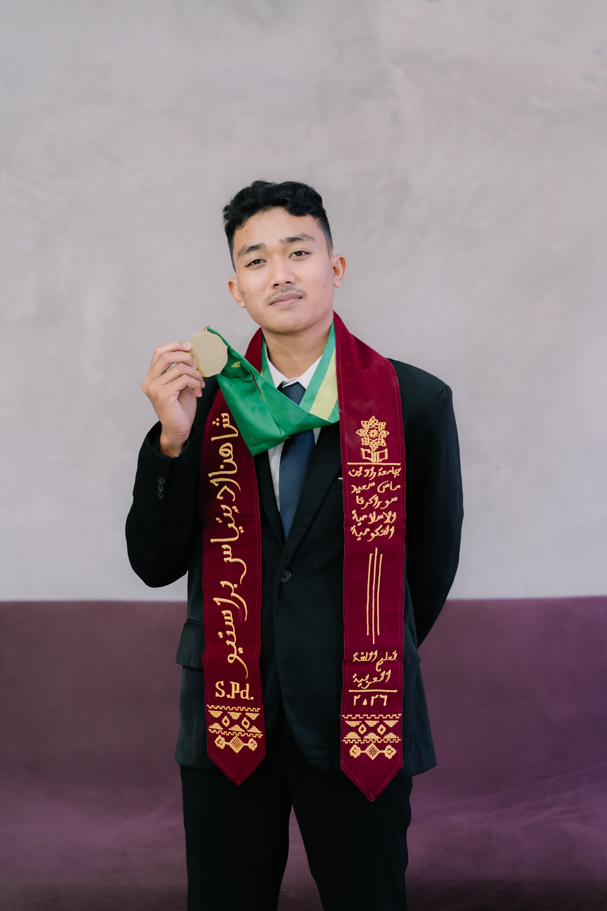
Mengoordinasikan anggota tim dan menyelaraskan tugas antarbagian. Coordinates team members and aligns tasks across departments.
Memimpin tim, membagi tanggung jawab, dan memastikan pekerjaan berjalan sesuai rencana. Leads teams, delegates responsibilities, and ensures work progresses as planned.
Mengatur prioritas dan memastikan rangkaian kegiatan berjalan sesuai jadwal. Prioritizes tasks and ensures activities stay on schedule.
Memastikan detail teknis, kebutuhan acara, dan pembagian tugas tidak terlewat. Ensures technical details, event needs, and task assignments are not overlooked.
Membangun komunikasi efektif dengan panitia, narasumber, peserta, dan pihak terkait. Builds effective communication with committees, speakers, participants, and stakeholders.
Mengidentifikasi kendala dan menentukan solusi yang sesuai dengan situasi. Identifies challenges and determines solutions suited to the situation.
Menyesuaikan diri dengan perubahan kebutuhan dan kondisi selama kegiatan berlangsung. Adapts to changing needs and conditions throughout an activity.
Proaktif mengambil tindakan dan bertanggung jawab atas tugas yang diberikan. Takes initiative and remains accountable for assigned responsibilities.
Menyusun alur acara, urutan kegiatan, dan pembagian waktu. Plans the event flow, activity sequence, and time allocation.
Mengelola kebutuhan operasional dan memastikan kesiapan pelaksanaan acara. Manages operational needs and ensures event readiness.
Mengoordinasikan kebutuhan divisi acara, perlengkapan, konsumsi, publikasi, dan kesekretariatan. Coordinates the needs of event, equipment, catering, publication, and secretariat divisions.
Menyiapkan serta memeriksa kebutuhan teknis dan perlengkapan acara. Prepares and checks technical requirements and event equipment.
Memandu acara, mengelola diskusi, dan menjaga interaksi dengan peserta. Hosts events, facilitates discussions, and maintains participant interaction.
Mengelola dokumen, surat-menyurat, data, dan administrasi kegiatan. Manages documents, correspondence, data, and event administration.
Mengolah dokumen, data, jadwal, dan laporan kegiatan. Uses Microsoft Office and Google Workspace to manage documents, data, schedules, and event reports.
Mengevaluasi pelaksanaan kegiatan dan menyusun laporan hasil kegiatan. Evaluates event execution and prepares activity outcome reports.
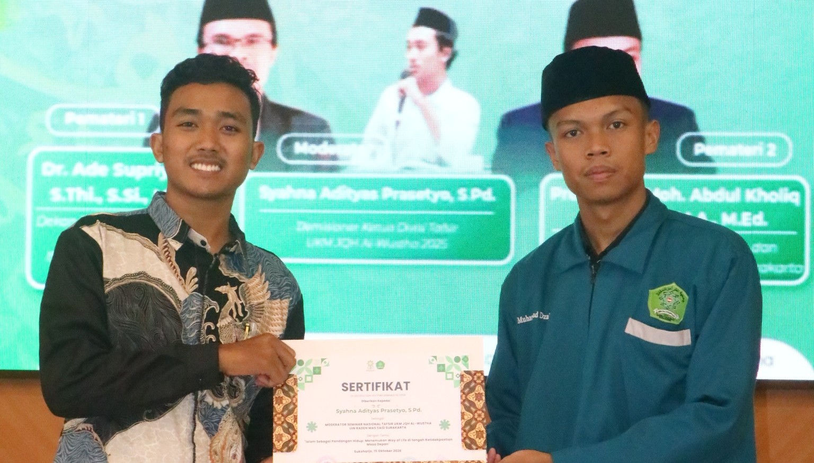
October 2026
Served as the moderator of the 2026 National Tafsir Seminar, themed “Islam as a Way of Life: Finding Direction Amid Future Uncertainty.” Guided the discussion, connected the speakers’ perspectives, facilitated audience interaction, and maintained a structured and engaging flow throughout the seminar.
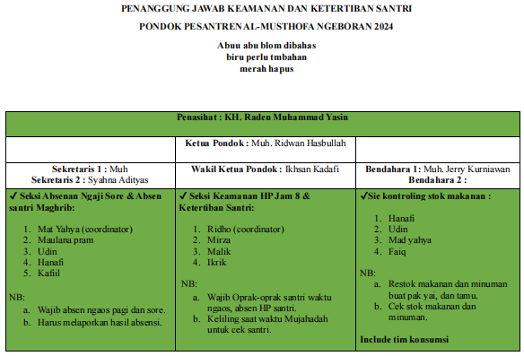
August 2023 – September 2026
Managed administrative systems and activity programs while coordinating student activities and organizational operations. Contributed to improving program implementation and organizational discipline, achieving approximately 90% program regularity and implementation. Supported activity planning, administrative management, and coordination to ensure programs ran systematically alongside students’ academic schedules.
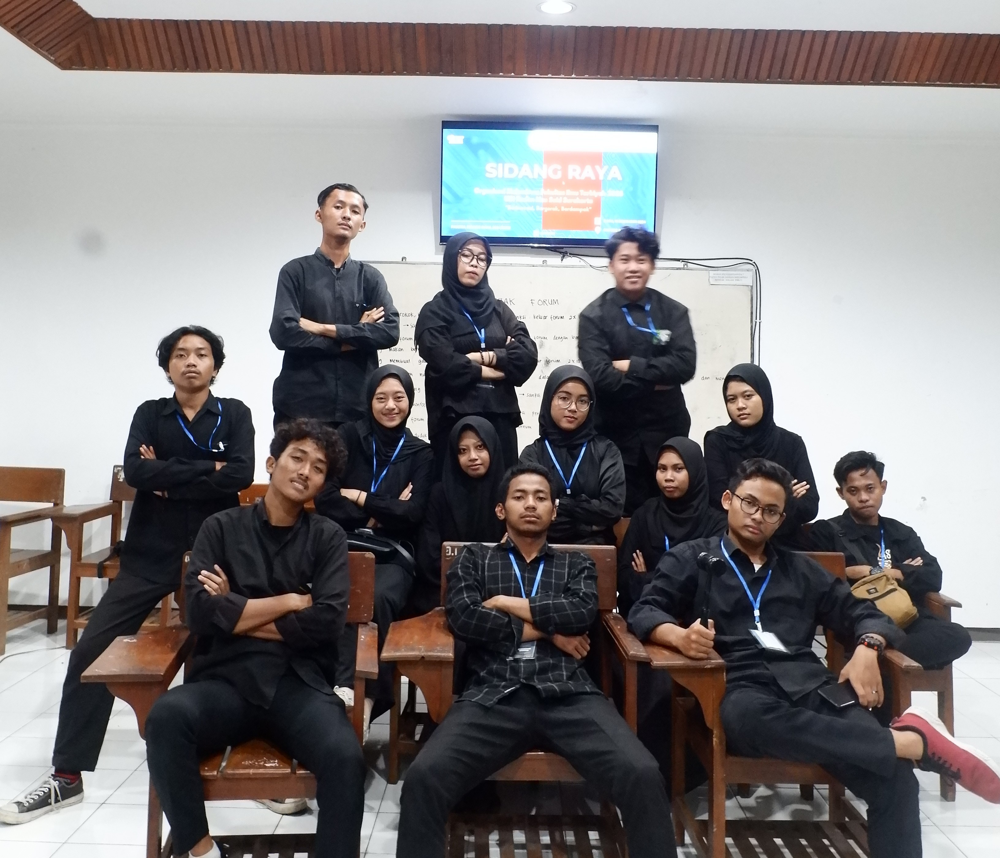
December 2024
Coordinated the planning and execution of the Faculty General Assembly, including candidate registration and screening, candidate announcements, campaign activities, accountability reports, leadership transition, and the main assembly. Also served as a moderator for the student association chairperson candidate debate, ensuring a structured discussion and an orderly event flow.
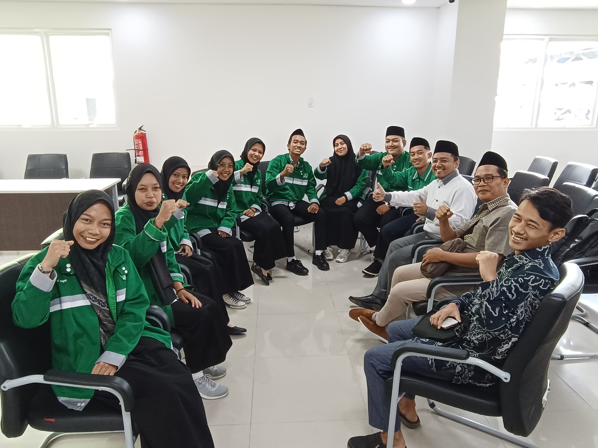
February 2025 – January 2026
Led and coordinated division members in planning, implementing, and evaluating programs, including tafsir discussions, study sessions, communication training, learning activities, and competitions. Managed task distribution, team communication, and program execution while supporting several activities as a moderator.
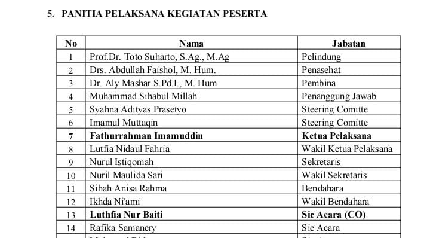
May 2025
Contributed to the planning and coordination of the National Tahfizh Seminar by providing input on the readiness of multiple divisions, including the event team, secretariat, finance, publication and documentation, sponsorship, consumption, and logistics. Supported cross-functional coordination to help ensure smooth event preparation and execution.
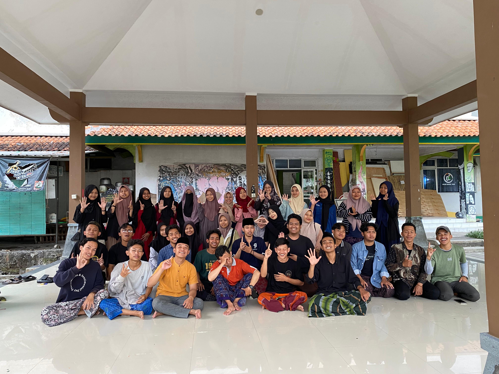
February 2024 – September 2024
Led and coordinated a committee of 50+ members in organizing Semarak Generasi Qur’ani XII (SGQ 12), a Java-wide competition event featuring Qur’anic recitation (MTQ), Da’i, memorization (MHQ), calligraphy, and Hadroh Festival. Coordinated event planning, cross-division collaboration, administrative processes, and supporting activities, including a national seminar attended by speakers from the academic and religious communities. The event reached hundreds of participants from various regions.
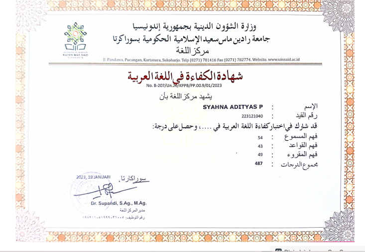
Score: 487
Demonstrated Arabic language proficiency with a score of 487.
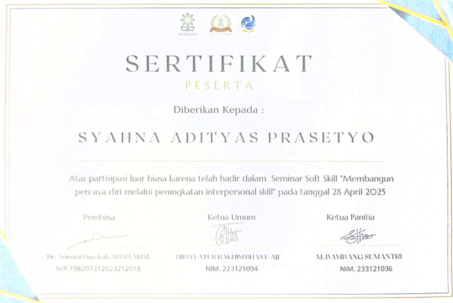
Participated in soft skills development to strengthen personal and professional competencies.
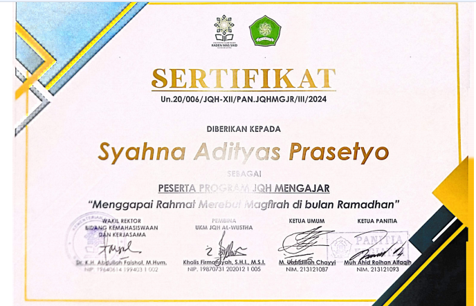
Participated in an educational program focused on teaching and community engagement.
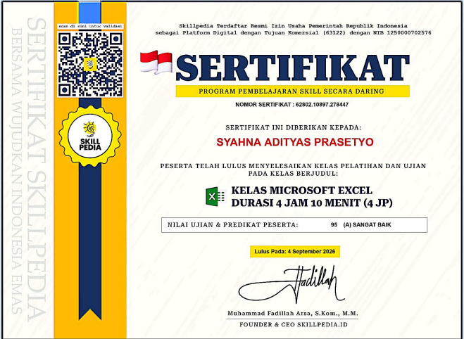
12.7 Training Hours Average Score: 97.5% (A – Excellent) Topics: Microsoft Word (Basic & Advanced), Excel, and PowerPoint.
Developed practical skills in Word, Excel, and PowerPoint, achieving an average score of 97.5%.
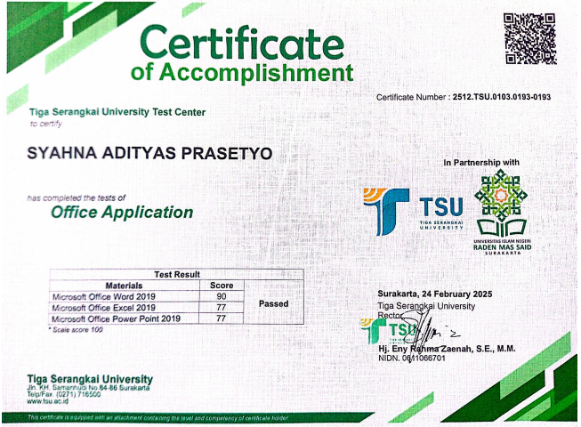
Average Score: 81.33 Topics: Microsoft Word, Microsoft Excel, and Microsoft PowerPoint.
Achieved an average score of 81.33 across Microsoft Word, Excel, and PowerPoint.
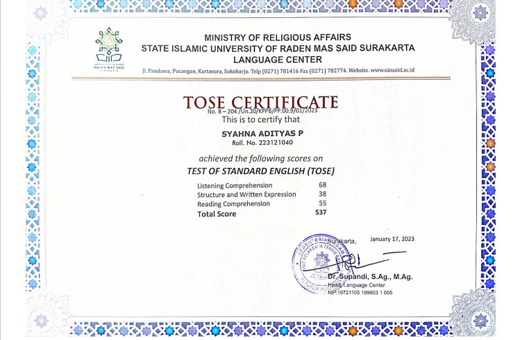
Score: 537
Demonstrated English language proficiency with a score of 537.